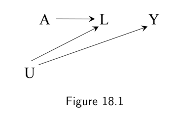
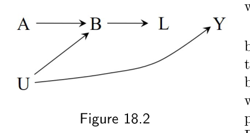
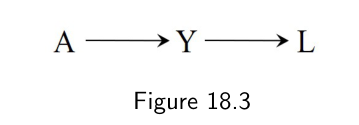
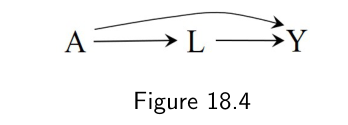
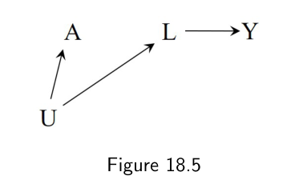
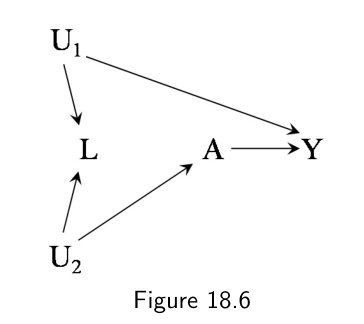
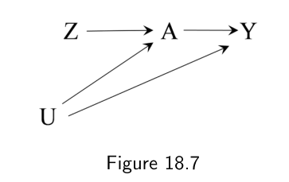

第二部分 · 基于模型的因果推断 · Part II — Causal inference with models
第 18 章 · 变量选择与高维数据
Hernán MA, Robins JM（2020）. Causal Inference: What If. Chapter 18. 本页为中文全文翻译，附译注。
前几章里，我们介绍了几种估计处理 A 对结局 Y 因果效应的调整方法，包括分层与结局回归、标准化与参数化 g 算法、逆概率加权、以及 g 估计。这些方法调整的方式各不相同，但都依赖同一个前提：调整变量集 L 必须包含足够的信息，使处理组 A = 1 与未处理组 A = 0 之间达到条件可交换性（conditional exchangeability）——等价地说，要阻断 A 与 Y 之间所有后门路径，且不打开其他带来偏倚的路径。实际工作中，一个常见问题是：怎么选 L 里的变量来做调整。本章针对"数据分析的目标是因果推断"这一情形，给出变量选择的一些准则。由于因果推断的变量选择标准不同于预测，预测分析中通行的变量选择流程不能直接搬到因果分析里来。本章总结因果分析中错误选择变量的问题，并给出一些实操建议。
18.1 变量选择的不同目标
正如全书反复强调的，可靠的因果推断通常需要调整混杂和其他偏倚。当处理 A 与结局 Y 之间的关联，部分或全部可由混杂因素 L 解释时，就需要在数据分析中纳入对这些混杂因素的调整；否则，这个关联度量无法被解释成因果效应度量。
但如果数据分析的目标纯粹是预测，就不需要为混杂做任何调整。我们如果只是想量化戒烟 A 与体重增加 Y 之间的关联，直接从数据里估计就行：比较戒烟者与未戒烟者的平均体重增加。更一般地，如果我们想建立一个预测体重增加的模型，就会想纳入那些能预测体重增加的协变量（比如是否戒烟、基线体重、年收入）。我们不会去问"这些协变量是不是混杂因素"，因为没有哪个处理变量的效应会被混杂。在预测模型里，我们不会赋予任何参数估计以因果解释，因此也不去调整混杂——混杂这个概念本身就派不上用场。
提醒：混杂（confounding）是一个因果概念，当估计量是关联（association）而不是因果效应时，它并不适用。
预测/关联模型与因果模型的这一区分，我们在第 15.5 节讨论过。假设临床研究者用结局回归来识别心衰高风险患者。目标是分类，而分类是预测的一种形式。这些预测模型的参数不一定有任何因果解释，模型里所有协变量地位相同——不存在处理变量 A 和调整变量 L 之分。举个例子，既往住院史可能被识别为未来心衰的有用预测因子，但没人会因此建议"别让人住院来预防心衰"。识别预后差的患者（预测）不同于找出预防或治疗疾病的 best 行动方案（因果推断）。
对于纯预测，研究者想用的是能提升预测能力的变量。多数预测算法都包含所谓的调参（tuning）参数，其值必须被选定以优化预测准确度。例如，lasso 和岭回归都包含一个把回归系数向零收缩的正则化参数。但收缩的恰当程度（即正则化参数的大小）需要从数据中自适应地选出来。对神经网络，调参包括网络的深度和宽度。调参值常常用交叉验证来选定（见精细辨析 18.2）。交叉验证也用于在相互竞争的算法之间做选择，因为没有哪个单一算法能在所有数据集上都给出更好的预测。
由于某些选择算法（如深度神经网络）是"黑箱"流程，变量是怎样被选出的、算法为何有效，并不总是容易解释。一种观点是这无所谓：在特定人群和场景下的纯预测用途中，只要某个算法能改善预测，它就是正当的，不论可解释与否。
另一种观点则主张需要可解释的算法，理由是医生若无法向自己和患者说清这些治疗决策背后的医学理由——尤其面对症状组合异常的患者——他们会感到不安。再者，黑箱算法部署到新场景时可能表现糟糕，因为它们往往依赖训练场景里局部、常常非因果的特征，而这些特征在新场景里并不存在。最后，黑箱算法可能把那些有预测力、却带有（社会性）歧视的做法固化下来，因为这些做法在训练数据收集时本是既成事实。
因果分析需要不同的考量。与预测分析不同，在因果分析里，若想让处理效应的估计具备因果解释，就需要审慎地选择混杂因素。自动变量选择流程对预测也许管用，对因果推断却通常不行。变量选择算法可能挑出一些用于调整的变量，反而给效应估计引入偏倚。这种偏倚的成因有几类，有些前面讲过，有些还没讲。下一节把它们一并梳理。
18.2 诱发或放大偏倚的变量
想象我们拥有无限的算力，以及一个近乎无限个体的数据集（数据集的行），每个人测了非常多变量（数据集的列），包括处理 A、结局 Y，以及若干离散变量 X，其中一些可能是 A 对 Y 效应的混杂因素。在这种设定下，我们可以随心所欲地调整数据集里的任意多变量，不受算力、数值或统计上的约束。因此，若目标只是用 A 和 X 预测 Y（在标准最小二乘损失下；见技术要点 18.1），我们只需取每个 A 与 X 联合层内 Y 的均值，就能最优地预测 Y。
然而，假设我们想无偏地估计二元处理 A 对结局 Y 的平均因果效应，也就是 E[Ya=1] − E[Ya=0]。那么协变量调整的目标是借助已测变量 X 所含的信息，尽可能消除混杂。我们可以用分层/结局回归、标准化/g 算法、逆概率加权或 g 估计，轻松地对全部已测变量 X 做调整。有没有理由只调整 X 的一个子集、而非简单地调整所有可用变量 X 呢？答案是有。即使在这个理想设定下，我们也希望确保某些变量不被选入调整集，因为调整那些变量会引入偏倚。下面几个例子说明了这一点——当 X 中某些变量 L 受到 A 的因果影响时。
提醒：用分层法调整协变量时，请记住调整后的关联度量可能不同于未调整的关联度量，即便不存在混杂。见精细辨析 4.3。
假设问题的因果结构由图 18.1 的因果图（与图 7.7 相同）表示，其中变量 L 是一个碰撞因子（collider）。由于不存在由 L 造成的混杂，平均因果效应 E[Ya=1] − E[Ya=0] = 0 可被 E[Y | A = 1] − E[Y | A = 0] 无偏估计。现在假设我们尝试用 g 算法调整 L 来估计平均因果效应：∑l E[Y | A = 1, L = l] Pr(L = l) − ∑l E[Y | A = 0, L = l] Pr(L = l)。这个对比不同于 E[Y | A = 1] − E[Y | A = 0]——因此是有偏的——因为 L 在给定 A 时与 Y 条件相关、且在边际上与 A 相关，所以 Pr(L = l) ≠ Pr(L = l | A)。由于调整了 L 之后的 A–Y 关联，即使处理 A 对结局 Y 的因果效应为零，也预期非零，我们说这是零假设下的选择偏倚（selection bias under the null）。当我们调整一个像图 18.3 中那样、受处理影响的非碰撞因子 L 时，同样的偏倚也会出现。

像图 18.2 的因果图那样，L 是碰撞因子 B 的后代（descendant）时，也会出现同样的偏倚。你可以重温第 8 章，看更多包含碰撞因子及其后代的因果结构例子。

当调整的变量是一个像图 18.3 因果图中那样、受处理影响的非碰撞因子 L 时，选择偏倚也可能出现。这里，平均因果效应 E[Ya=1] − E[Ya=0] ≠ 0 同样可被 E[Y | A = 1] − E[Y | A = 0] 无偏估计，因为没有由 L 造成的混杂。然而，如果我们试图把 L 当作处理前变量来调整，g 算法的对比就会因与上一段相同的原因而偏离 E[Y | A = 1] − E[Y | A = 0]。

现在假设从 A 到 Y 的箭头原本就不存在，即" A 对 Y 无效应"的零假设成立，于是 E[Ya=1] − E[Ya=0] = 0。那么 A 与 Y 独立（在边际上、以及在给定 L 时都独立），g 算法的对比将为零、从而无偏。这个结果的关键在于：在零假设下，A 不再对 L 有因果效应。也就是说，与图 18.1 和 18.2 不同，在图 18.3 中调整 L 只会在 A 对 Y 有非零因果效应时才产生选择偏倚。我们于是说这是备择假设下的选择偏倚，或偏离零的选择偏倚（selection bias under the alternative / off the null，见第 6.5 节）。
当调整变量受处理 A 影响、且影响结局 Y 时，我们称该变量为中介变量（mediator）。考虑图 18.4 的因果图，中介变量 L 位于从处理 A 到结局 Y 的因果路径上。调整了中介变量 L（或其后代）之后的 A–Y 关联，会不同于 A 对 Y 的效应，因为这种调整阻断了经由 L 的那部分效应。当感兴趣的对比是 A 对 Y 的平均因果效应时，这个问题有时被称为对中介变量的过度调整（overadjustment for mediators）。

上面这些致偏变量有一个共同特征：它们都受处理影响，因此是处理后变量（post-treatment variables）。有人或许因此认为，我们应当永远避免调整发生在处理 A 之后的变量。这条"不调整处理后变量"的规则很好执行，因为调整变量与处理的时间先后通常已知。可惜，遵循这条简单的规则可能导致把有用的调整变量排除掉，正如我们在精细辨析 7.4 里讨论过的。考虑图 18.5 的因果图。变量 L 是处理后变量，但它可用来阻断处理 A 与结局 Y 之间的后门路径。因此，调整了 L 的 A–Y 关联是 A 对 Y 效应的无偏估计，而未调整的 A–Y 关联才是有偏估计。要点是：因果图不在乎时间顺序。所以，当 A 不影响 L 时，无论 L 在时间上先于还是晚于 A，正确的分析都应当一样。

问题在于，即便我们知道变量的时间顺序，也无法从数据判断 A 是否影响 L。事实上，给定时间顺序 A → L → Y，任何不含独立性的联合分布 (A, L, Y) 都与好几幅因果图相容。所以是否调整 L，必须依据数据之外的信息来决定。也就是说，是否调整 L 无法靠任何只依赖统计关联的自动流程来确定。例如正如第 7 章所说，单凭数据无法区分一个碰撞因子与一个混杂因素。相反，把致偏变量排除出调整集，需要依靠关于问题因果结构的专业知识。
应用专业知识做调整的一个例子，见 Hernán 等（2002）。
接下来我们考虑调整那些时间上在处理 A 之前的变量 L，即现在的时间顺序是 L → A → Y。为简单起见，假设样本量很大，远超可用于调整的协变量 X 的个数。于是任意估计量的方差都可忽略，唯一的问题是偏倚。在这种设定下，人们普遍相信：调整所有可用的处理前协变量，会把偏倚降到最小。然而这个信念是错的，原因有两条，且彼此独立。
考虑图 18.6 的因果图（与图 7.4 相同），其中包含一个处理前变量 L。由于 L 是 A 到 Y 路径上的一个碰撞因子，调整它会引入选择偏倚——我们在第 7 章称之为 M-偏倚（M-bias）。同样，观测数据无法区分混杂因素与碰撞因子，所以必须依靠手头任何外部信息，来决定是否调整某个处理前变量 L。事实上，L 也可能既是混杂因素又是碰撞因子——如果图 18.6 里多一条从 L 指向 A 的箭头——这意味着无论调不调整 L，平均因果效应都无法被识别。

还有一条理由要避免不分青红皂白地调整处理前变量：偏倚放大（bias amplification），这是本书此前还没讲过的一种现象。考虑图 18.7 的因果图（与图 16.1 相同），它表示一个处理 A 对结局 Y 的因果效应受到未测量变量 U 混杂的设定。由于 U 不在数据里，我们无法调整 U，混杂也就无法消除。对变量 Z 做调整——把上面 g 算法里的 L 换成 Z——并不能消除混杂，因为 Z 不在从处理 A 到结局 Y 的任何后门路径上。事实上，Z 是一个工具变量（instrumental variable）——在第 16 章描述的某些情形下可用于工具变量估计——因此对 g 算法而言，它对直接调整混杂毫无用处。

有意思的是，尽管 Z 无法用来消去 U 造成的混杂偏倚，调整这个工具变量 Z 却可能放大 U 造成的混杂偏倚。也就是说，调整了 Z 的 A–Y 关联，可能比不调整 Z 的 A–Y 关联离"A 对 Y 的效应"更远。这种因调整工具变量 Z 而产生的偏倚放大，常被称为 Z-偏倚（Z-bias），是我们要避免调整诸如 Z 这类变量的理由。不过，偏倚放大并非必然：调整 Z 也可能减小由未测量变量 U 造成的混杂偏倚。一般而言，无法事先知道调整一个工具变量究竟会放大还是减小偏倚。
提醒：若对应这幅因果图的所有结构方程模型都是线性的，则偏倚放大必然发生（Pearl 2011）；但在更现实的设定下也可能出现（Ding 等 2017）。
小结：即便没有算力约束、样本量近乎无限，也不建议调整所有可用变量 X。理想情况下，调整集不应包含任何可能引入或放大偏倚的变量。由于这些致偏变量无法被纯统计算法从经验上识别出来，变量选择需要专家知识的导引。
18.3 因果推断与机器学习
在本章余下部分，我们假设已经成功地保证了 X 不含任何可能诱发或放大偏倚的变量（即，若加以调整就会破坏条件可交换性的变量），同时仍包含了 A 对 Y 平均因果效应所需的全部混杂因素 L（即达到条件可交换性所需的所有变量）。进一步，我们假设可阳性性（positivity）成立。接下来要解决的问题是：当 X 维度很高、或包含多个连续变量时，如何在实践中估计这个效应 E[Ya=1] − E[Ya=0]。
如果 E[Ya=1] 和 E[Ya=0] 估计得好，它们的差就是 E[Ya=1] − E[Ya=0] 的好估计。为简单起见，我们聚焦于 E[Ya=1] 的估计。
依所选调整方法的不同，变量 X 的用途也不同。用插件式 g 算法（标准化）估计 E[Ya=1] 时，我们要估计在 A = 1 个体中、条件于变量 X 的结局 Y 均值，记为 b(X)；用逆概率加权时，我们要估计条件于变量 X 的处理 A 的概率，记为 π(X)。我们可以用本书第二部分讲过的传统参数化模型（比如带线性、logistic 或对数链接的广义线性模型，参数个数远小于样本量）来给出估计 b̂(x) 和 π̂(x)。当 X 维度很高时，这类模型必定设定误设（misspecified）。结果是，b̂(x) 和 π̂(x) 都无法一致地估计真实的 b(x) 和 π(x)。
为减小模型误设的可能，我们也许想拟合一个参数丰富的广义线性模型，其线性预测子为 θT s(x) = ∑j θj sj(x)，其中 s(X) 是协变量向量 X 的一个很高维变换向量。向量 s(X) 通常既包含单个变量的灵活高维变换（如三次样条），也包含这些变换的跨变量乘积。
为具体起见，假设我们选 logit 链接，于是 b̂(x) = expit(θbT s(x))，π̂(x) = expit(θπT s(x))，其中 θb 和 θπ 是 b(x) 与 π(x) 模型的参数。即便基于这些模型的估计函数 b̂(x) 和 π̂(x) 是一致的，在有限样本下，误差 b̂(x) − b(x) 和 π̂(x) − π(x) 也会比正确设定的低维参数模型大得多。事实上，s(X) 的维度常常超过为研究提供数据的个体数 n。那样的话，模型拟合会无法收敛，也就得不到 θ 的估计。
提醒：X 中有些变量甚至不是混杂因素，若我们知道是哪些，本不必去调整它们。
可行的出路有：给带线性预测子 θT s(X) 的参数模型加上 lasso 或岭惩罚（见精细辨析 18.1），使用逐步选择之类的变量选择算法，或者用其它预测性机器学习算法（如基于树的算法，例如随机森林；或神经网络，例如深度学习）来估计条件期望 b(X) 和 π(X)。正如精细辨析 18.2 所述，深度学习算法拟合的模型常常包含成千上万个参数。其它机器学习算法也实际上拟合了成千上万个参数。在大多数样本量大、协变量 X 多的情形下，就准确预测条件期望而言，机器学习算法胜过传统参数模型。
然而，预测性机器学习算法本身并不足以在高维设定下妥善调整混杂。下一节我们会说明，这些算法必须与双重稳健估计量结合使用，并做两处修改：样本分割（sample splitting）与交叉拟合（cross-fitting）。如果我们希望构造出有效的 95% Wald 置信区间——即至少 95% 的时间能套住所关注因果参数的区间——这是必须的。
18.4 双重稳健的机器学习估计量
对 ψ = E[Ya=1] 而言，有效的 Wald 区间要求估计量的偏倚远小于估计量的标准误。多数估计量 Ê[Ya=1] 的标准误按 1/√n 乘一个常数来缩放，其中 n 是样本量。因此我们要求 Ê[Ya=1] 的偏倚远小于 1/√n。除了偏倚小，为了有以 Ê[Ya=1] 为中心的、有效的 Wald 区间，我们通常还需要 Ê[Ya=1] 渐近正态，这通常比"偏倚小"更容易达到。
双重稳健估计量比非双重稳健估计量更容易达到小的偏倚，因为双重稳健估计量的偏倚 Ê[Ya=1] − E[Ya=1] 取决于误差 π(x)−1 − π̂(x)−1 与 b(x) − b̂(x) 的乘积，而这个乘积可以很小。实际上，若两个误差都远小于 1/(4√n)，则偏倚小于 1/√n，而这在 π(x) 和 b(x) 要么相当平滑（即有很多阶导数）、要么非常稀疏（即只依赖于向量 X 的少数几个分量，尽管是哪几个、有多少个未知）时，机器学习估计量常常能做到。
提醒：对 ψ = E[Ya=1] 的双重稳健估计量这一性质，叫做二阶偏倚（second-order bias）。详见技术要点 13.2。相比之下，E[Ya=1] 的逆概率加权和插件式 g 算法估计量的偏倚，可以分别大到 π(x)−1 − π̂(x)−1 和 b(x) − b̂(x) 这么大。若是如此，无论是 E[Ya=1] 的逆概率加权估计量还是插件式 g 算法估计量，通常都无法支撑一个有效的 Wald 置信区间，因为在高维 X 下，任何可能的 π(x) 或 b(x) 的估计量 π̂(x) 或 b̂(x) 的误差都必然超过 1/√n。
但是，如果我们想构造有效的 95% Wald 置信区间，上一段的双重稳健机器学习估计量还需要加入样本分割与交叉拟合。下面描述这两个流程及其缘由。技术要点 18.1 概括了估计过程的步骤。
先讲样本分割。第一步，把 n 个个体的研究总体随机分成两半：一个大小为 n/2 的估计样本，和一个同样大小的训练样本。第二步，把预测性机器学习算法应用到训练样本上，得到条件期望 b(x) = E[Y | X = x, A = 1] 和 π(x) = E[A | X = x] 的估计 b̂(x) 与 π̂(x)。第三步，用训练样本给出的 b̂(x) 与 π̂(x)，在估计样本里计算平均因果效应的双重稳健估计量。至此，我们在研究总体随机的一半上，得到了一个双重稳健的机器学习估计量。
提醒：我们可以把训练样本称为干扰（nuisance）样本，因为我们用它来估计 b(X) 和 π(X) 的干扰回归。精细辨析 15.1 回顾了干扰参数的概念。
为理解为何需要样本分割，我们把分半样本版本与全样本版本的增广逆概率加权（AIPW）双重稳健估计量（技术要点 13.2）做个比较。分半样本 AIPW 估计量对 E[Ya=1] 所用估计样本，与只用到训练样本数据的分半样本估计量 b̂(x) 和 π̂(x) 在统计上独立。结果是，在技術要点 18.2 所述的弱条件下，该估计量渐近正态，标准误按 1/√n 缩放，并带上前面说过的乘积偏倚。由此可见，若乘积偏倚小于 1/√n，以分半样本估计量为中心的 Wald 区间将是有效的。
相比之下，全样本 AIPW 估计量对 E[Ya=1] 是
Ê[Ya=1] = (1/n) ∑i=1n [ b̂(Xi) + (Ai / π̂(Xi)) (Yi − b̂(Xi)) ]
其中 b̂(x) 和 π̂(x) 现在由应用到全部 n 个个体数据上的机器学习算法估计。于是 b̂(x) 和 π̂(x) 与全样本 AIPW 估计量相关。这个相关性若足够大，会以不可预测的方式影响全样本估计量的偏倚、方差和渐近正态性。不幸的是，相关性的大小未知，也无法很好地估计。因此，在高维设定下，分半样本估计量远比全样本估计量更受青睐。
提醒：样本分割与交叉拟合并非新流程。但把这些流程与机器学习结合起来的思路，直到最近才被强调。
使用双重稳健分半样本估计量唯一的难处在于，它的方差和标准误对应的是 n/2 的样本量。结果就是，我们的置信区间会比本能用全部 n 个个体时得到的更宽。克服这个问题的办法是交叉拟合。
下面讲交叉拟合如何挽回样本分割损失的统计效率。第一步，重复上面的流程，但把研究总体中估计样本与训练样本的角色互换。也就是说，把原先留给估计的那一半当作新的训练样本，把原先用于训练的那一半当作新的估计样本。然后，用新训练样本给出的 b̂(x) 与 π̂(x)，在新的估计样本里计算平均因果效应的双重稳健估计量。至此，我们在总体的另一随机一半上，又得到了一个双重稳健的机器学习估计量。
下一步是计算总体两半上这两个双重稳健估计量的平均值。这个平均值就是我们对整个研究总体效应的双重稳健估计。围绕该估计的 95% 置信区间，可以用自助法（bootstrapping）构造：既可以在估计值上加减 1.96 倍自助标准误，也可以用自助估计的 2.5 和 97.5 百分位作为区间上下界。
大功告成。通过样本分割与交叉拟合，我们可以把双重稳健估计与机器学习结合起来，得到具有已知统计性质、且用到了所有可用数据的因果效应估计。
提醒：Lin 等（2020）基于更高阶影响函数构造了估计量，其偏倚比双重稳健交叉拟合估计量更小，却没有显著增加方差。
18.5 变量选择是个难题
上一节概述的方法，推翻了一个普遍信念：任何数据自适应的调整变量选择流程都必然导致错误的置信区间。如我们所见，在某些条件下，把因果推断方法与用于混杂选择的机器学习算法相结合，确实能得到正确的统计推断。然而，双重稳健机器学习并没有解决我们所有的问题，原因至少有三（除了上一节讲的那条之外）。
第一，在许多应用场景里，现有的专业知识可能不足以识别所有重要的混杂因素，或不足以排除那些会诱发或放大偏倚的变量。因此，无法保证双重稳健机器学习估计量会有小的偏倚。
第二，双重稳健估计量的实现一直很难——与机器学习结合时尤其昂贵——在高维、且含时变处理的设定下更是如此。在因果生存分析中尤为明显。结果是，已发表的大部分基于复杂纵向数据的因果推断例子，用的都是单稳健估计量，也就是我们在本书第三部分主要强调的那些。不过，本章概述的方法在某些领域正迅速成为常规。
第三，双重稳健机器学习可以给出因果效应的方差，这个方差等于"若真实条件期望 b(X) 与 π(X) 已知"时会得到的方差。然而，无法保证这样的方差小到足以支撑有意义的因果推断。
假设我们按上一节所述，得到了一个双重稳健机器学习的因果效应估计，却发现它（正确的）方差大得没用。即便我们用很小的乘积偏倚估计了倾向性评分和结局回归，只要 X 中某些协变量与处理 A 强烈相关，这种情况也会发生。那么对于具有特定 X 值的个体，处理概率 π(X) 可能接近 0 或接近 1。结果就是，效应估计的方差非常大，于是 95% 置信区间非常宽（虽然往往是正确的）。既然我们不喜欢非常宽的 95% 置信区间——哪怕它们正确——我们可能会想把 X 中造成这个"问题"的变量扔掉，然后重做数据分析。如果这样做，我们就是在从根本上改变游戏规则。用数据去丢掉那些与处理相关、却与结局关联不大的 X 中协变量，就再也无法保证效应估计周围的 95% 置信区间仍然有效。在"把全部潜在混杂因素都纳入以消除偏倚"与"排除一些变量以减小方差"之间，张力很难化解。
提醒：这个结果引出一个令人困惑的哲学问题：若我们靠数据排除了那 5 个让方差过大的变量，置信区间就失效了；可要是我们碰巧拿到的一个数据集本来就不含那 5 个变量，为什么置信区间就有效呢？既然我们手头的数据集总归漏记了某些潜在混杂因素，在任何观察性分析里，我们到底该怎么解释置信区间？
鉴于以上种种，要开列出一套通用的变量选择准则，恐怕不可能。事实上，围绕这些问题的方法学研究仍在大量进行，本章不可能给出规定性指引。正如第 13.5 节所说，因果推断能给出的最好科学建议，或许是做多个敏感性分析：施行几种分析方法，检视得到的效应估计。若各种效应估计彼此相容，我们对结果会更有信心；若不相容，我们作为研究者的任务，就是去弄明白为什么。